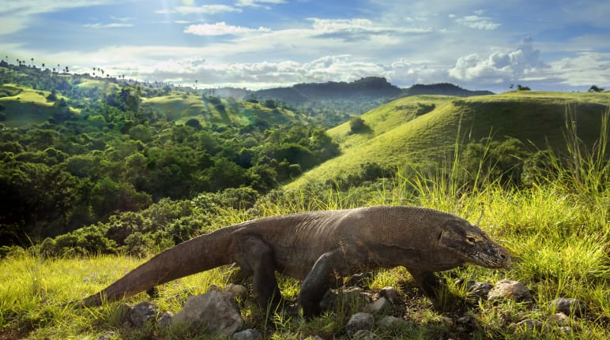
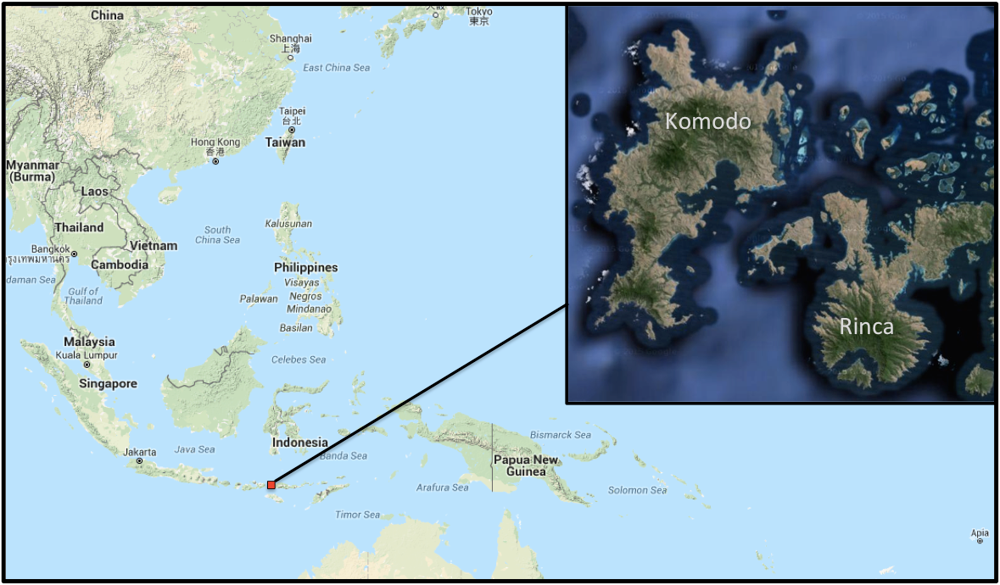
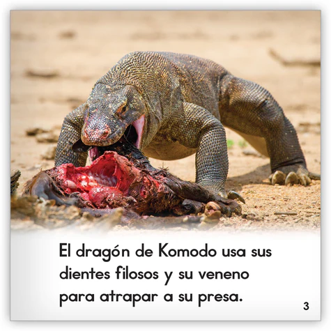
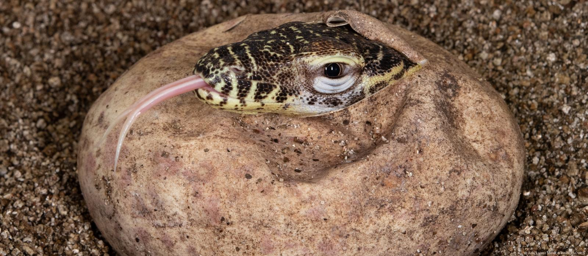
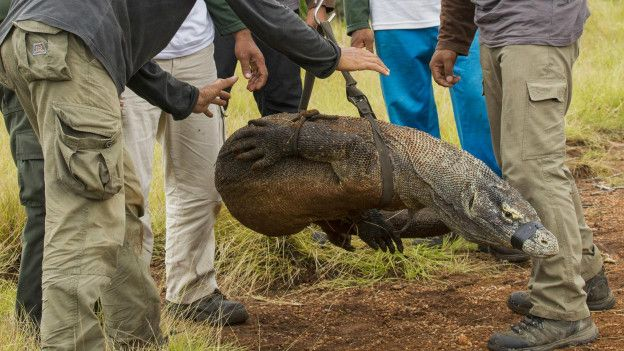

Detalles
| Hábitat | Ubicación geográfica | Hábitos alimenticios | Hábitos reproductivos | Estado de conservación |  Su hábitat natural incluye sabanas, bosques tropicales, pastizales y zonas bajas. |  El dragón de Komodo vive en las islas indonesas de Komodo, Rinca, Flores, Gili Motang y Gili Dasami. |  El dragón de Komodo es un carnívoro y carroñero que se alimenta de una gran variedad de presas, incluyendo búfalos, ciervos, cerdos, serpientes, y otros dragones. |

Reproducción ovípara: Los machos compiten por aparearse con las hembras receptivas. El macho ganador estimula a la hembra frotándose la barbilla y moviendo la lengua. La hembra pone entre 20 y 40 huevos en un nido excavado en el suelo. Los huevos eclosionan entre 7 y 9 meses. Reproducción asexual: Las hembras pueden reproducirse asexualmente en un proceso llamado partenogénesis. Esto es posible porque las hembras tienen cromosomas sexuales masculinos y femeninos. |
 El dragón de Komodo figura en la Lista Roja de Especies Amenazadas de la UICN clasificado como en peligro de extinción. Hay aproximadamente entre 4000 y 5000 dragones de Komodo en estado salvaje. Las poblaciones están limitadas a las islas de Gili Motang (100), Gili Dasami (100), Rinca (1300), Komodo (1700) y Flores (quizás unos 2000). Sin embargo, existe la preocupación de que solo podrían quedar unas 350 hembras reproductoras |
|---|